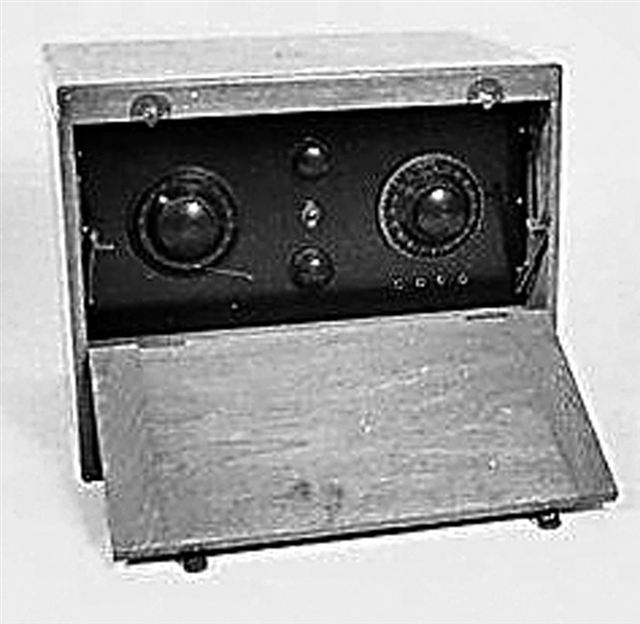
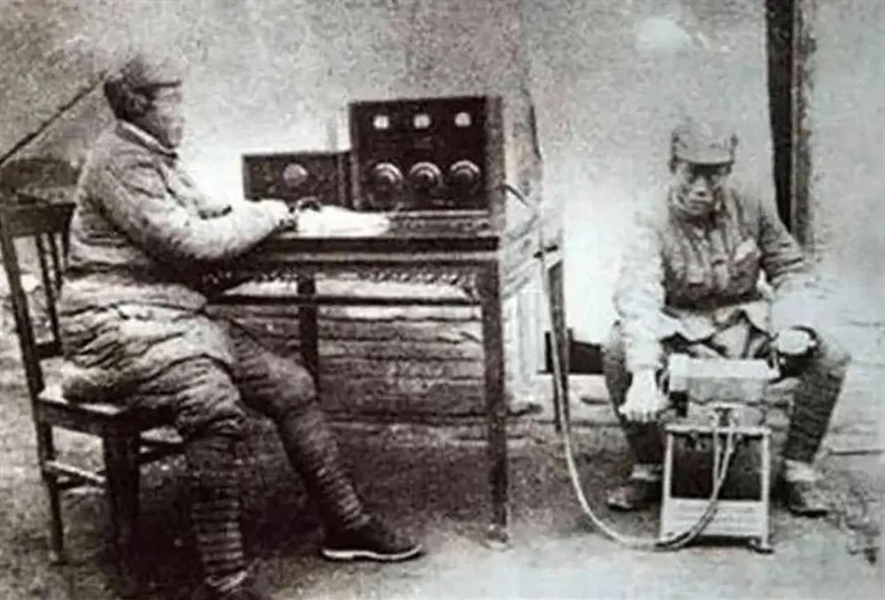

信号 01
从“半部电台”起步
王诤参加红军后，参与组建红军无线电队。红色通信事业从残缺设备和有限条件中艰难起步。
长征精神 · 岐黄微展
从王诤的通信坚守，看信息技术青年的责任担当

01 · 长征信号
点击节点，用一条时间线读懂红色通信的起点、坚守与传承。

两部电台交替前进，让总部通信尽可能保持不间断。
信号 01
王诤参加红军后，参与组建红军无线电队。红色通信事业从残缺设备和有限条件中艰难起步。
人物小传
王诤（1909—1978），原名吴人鉴，江苏武进人，黄埔军校第六期通信科学员。1930 年参加中国工农红军，1934 年加入中国共产党。
红军在第一次反“围剿”中缴获“半部电台”后，王诤参与组建红军无线电队，从仅能收报、不能发报的残缺设备起步，逐步建立起红军的无线电通信与侦察体系，被誉为红军通信事业的开创者。
他先后担任红一方面军无线电总队队长、中央军委第三局（通信联络）局长等职；新中国成立后长期领导人民通信与邮电事业，1955 年被授予中将军衔。
史料参考：中国共产党新闻网 · 常州史志 · 国家保密局
02 · 延伸阅读
本站仅作导览，点击后将前往原始资料页面。
“人在机器在”
收发设备、电池和充电机依靠运输人员肩挑手抬。
03 · 电报译码挑战
长征途中，为了保证总部无线电通信不间断，通信人员采用了什么办法？
04 · 精神接力
不收集姓名与个人信息，致敬状态仅保存在当前设备。
设备会更新，信号会延伸，责任始终在线。